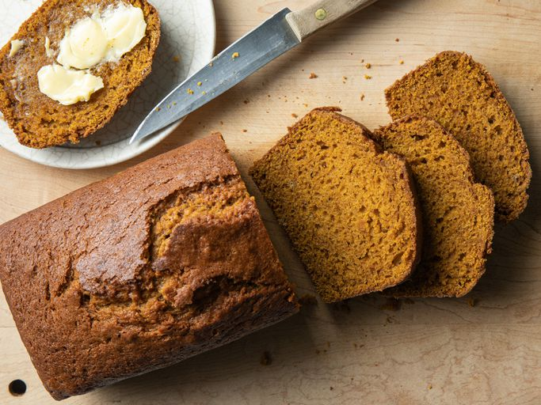

Downeast Maine Pumpkin Bread

https://www.allrecipes.com/recipe/6820/downeast-maine-pumpkin-bread/
This pumpkin bread recipe is perfect to make when fall is in the air. Can't you just smell a delicious loaf of freshly baked pumpkin bread? Or is that just those of us who dream about pumpkin bread all day? No matter. This pumpkin bread recipe makes two moist and flavorful loaves - the perfect way to use up the cans of pumpkin puree you stocked up on at the first sign of autumn. And what better recipe to use than this Downeast Maine Pumpkin Bread?
Prep Time: 10 mins. || Cook Time: 50 mins. || Servings: 24
Ingredients:
- 1 (15 ounce) can pumpkin puree
- 4 large eggs
- 1 cup vegetable oil
- 2/3 cup water
- 3 cups white sugar
- 2 teaspoons baking soda
- 1 1/2 teaspoons salt
- 1 teaspoon ground cinnamon
- 1 teaspoon ground nutmeg
- 1/2 teaspoon ground cloves
- 1/4 teaspoon ground ginger
Preparation Steps:
- Gather the ingredients. Preheat the oven to 350 degrees F (175 degrees C). Grease and flour two 9x5-inch loaf pans.
- Whisk flour, baking soda, salt, cinnamon, nutmeg, cloves, and ginger together in a large bowl.
- Mix pumpkin puree, eggs, oil, water, and sugar in a separate bowl until well blended.
- Stir flour mixture into pumpkin mixture until just blended.
- Pour batter into the prepared pans.
- Bake in the preheated oven until a toothpick inserted in center comes out clean, about 50 minutes.